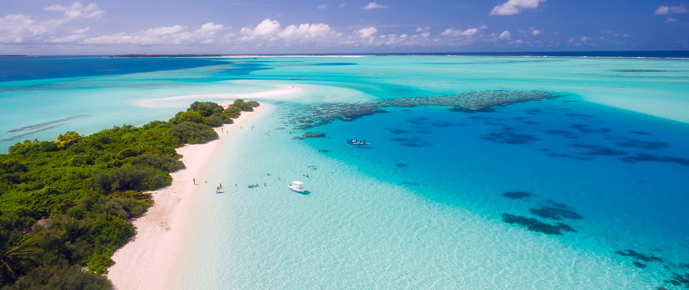

THE MALDIVES TRAVEL GUIDE
The Maldives conjures images of luxurious resorts and jet-set honeymooners lounging in beachfront villas and swimming in sapphire waters. While the Maldives is home to all of those things, there are ways to visit the Maldives without breaking the bank!
This remote country of 1,200 islands and almost 30 coral atolls is bursting with world-class diving and snorkeling. There are a plethora of opportunities to explore outside the hotel resort bubble and take in the beautiful remoteness of this tropical paradise. Thanks to a greatly improved boat transfer system and the opening up of independent guesthouses, the Maldives is evolving into a (slightly more) budget-friendly vacation spot.
Other Things to See and Do in the Maldives
- 1. Treat yourself to a spa day
-
Even when you’re on a modest budget, it’s wonderful to indulge in an extra dose of R&R. Expect to pay at least 1,000 MVR ($65 USD) for a 30-minute massage. Some of the larger hotels offer discounts for early-morning/late evening bookings so inquire with your hotel, Airbnb host, or guesthouse to find out about deals.
- 2. Go fishing
-
Seafood is an integral part of Maldivian cuisine. Most hotels and guesthouses rent poles, bait, and provide a guide for around 775 MVR ($50 USD). Skipjack and yellowfin tuna, wahoo, mahi-mahi, bigeye scad, and mackerel scad are all commonly found here. If you’re an experienced angler, some of the best game fishing in the world can be done here. Expect to pay at least 3,000 MVR ($200 USD) for a half-day shared charter.
- 3. Snorkel in the Baa Atoll
-
The Baa Atoll is a 1,200-square-kilometer UNESCO Biosphere Reserve brimming with manta rays and whale sharks. On a clear day, you can see them swarming below the surface. It’s only a five-minute boat ride from Dharavandhoo Island but visiting the area is strictly regulated and there is an 80 person capacity so as not to disrupt the precious ecosystem. Entrance is 310 MVR ($20 USD), which gives you 45 minutes in the water and a certified snorkel guide. Profits go towards the Baa Atoll Conservation Fund.
- 4. Visit the National Art Gallery
-
Established in 1999, there’s no permanent gallery here so be sure to check the website in advance as the space will be empty if there is no visiting exhibition on display. The temporary exhibitions at the gallery, which range from traditional paintings and local textiles to international modern artists, is well worth a visit.
- 5. Dive the Maldive Victory
-
In 1981, this 100-meter-long cargo ship hit a reef and sunk. It’s now an incredible dive site for experienced divers. Resting between 15-31m below the surface, there are strong currents here that keep the tropical fish flowing through the shipwreck — but they also make it a challenging dive site. You’ll see all kinds of coral, fish, and sponges here. It’s accessible all year around.
- 6. Visit the Male Fish Market
-
Come here and catch a glimpse of Maldivians living out their daily routine in the commercial center of Male. Select a fish (if you can muster your way through a purchase as most fishermen don’t speak English) and have it cooked at your guesthouse for dinner.
- 7. Wash up on a sandbank
-
These tiny mounds of sand in the middle of the Indian Ocean are the closest you’ll get to feeling like you’re on your own private island. Private trips can be arranged to any one of the hundred different banks dotted around the islands (many of which are attached to/affiliated with resorts) for 775 MVR ($50 USD) a person. Tours usually last 2-3 hours.
Maldives Travel Costs
Accommodation – There are no convenient hostel or dorm options around the country. There is a single hostel on Thulusdhoo Island but it costs 615 MVR ($40 USD) per night. Since private rooms can be found for that same price, opt for a guesthouse instead of a dorm.
Resorts start at 5,400 MVR ($350 USD) per night (not including the private speed boats you’ll need to arrive there). They can cost upwards of $2,000 USD a night, making this an ideal place to use any hotel points you have saved up.
Food – Traditional cuisine in the Maldives is based on fish, coconuts, and rice. Tubers like taro and sweet potatoes are also common staples. Most resorts and hotels include meals since restaurants here are rare. Aside from all kinds of fish and seafood soups and stews, be sure to try favorites such as gulha (fried fish filled dough balls), kuli (spicy fish cakes), and dessert treats like bondi bai (Maldivian rice pudding). Most traditional meals cost less than 55 ($5 USD).
For a three-course meal of traditional food at a budget-friendly hotel, expect to pay around 310 MVR ($20 USD) with a drink. For a meal at a five-star resort restaurant, you’re looking at upwards of 2,300 MVR ($150 USD).
Backpacking the Maldives Suggested Budgets
If you are backpacking the Maldives, my suggested budget is 1,078 MVR ($70 USD) per day. This assumes you’re staying in a budget guesthouse or shared Airbnb, eating cheap traditional cuisine ,cooking some of your meals, doing cheap activities like snorkeling, and taking public ferries to get around.
You can use the chart below to get some idea of how much you need to budget daily, depending on your travel style. Prices are in USD.
| Accommodation | Food | Transportation | Attractions | Average Daily Cost | |
|---|---|---|---|---|---|
| Backpacker | $40 | $15 | $5 | $10 | $70 |
| Mid-Range | $150 | $60 | $20 | $50 | $280 |
| Luxury | $350 | $100 | $50 | $100 | +$600 |
The Maldives Travel Guide
Where To Stay in the Maldives
- Dream Inn (Thulusdhoo)
- Cokes Beaches (Thulusdhoo)
- Hanifaru Stay (Kendhoo)/li>
Maldives Spa Resorts
- Emerald Maldives Resort & Spa
- Vakkaru Maldives
- Coco Bodu Hithi
8 Cool Things to Do in the Maldives
- Go Snorkelling
- Get Your PADI Certification and Go Diving
- Try out Unique Features of Resorts
- Visit Malé
- Visit a Local Island
- Go for a Ride on a Dhoni
- Go Fishing
- Try Surfing
Maldives
You've seen photos of the Maldives before: picture-perfect private villas suspended over striking blue waters, alabaster white sand beaches and spectacular sunsets dipping into the horizon. The scenic beauty of the Maldives is something to behold, something you can't quite understand until you're there in person.via: nomadicmatt.com